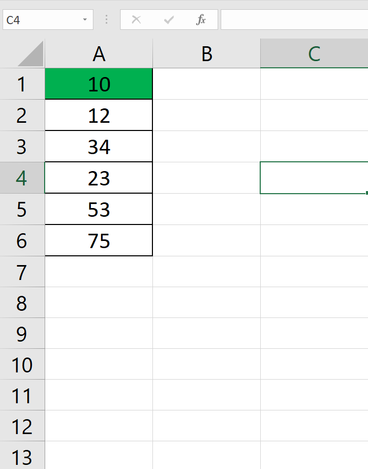
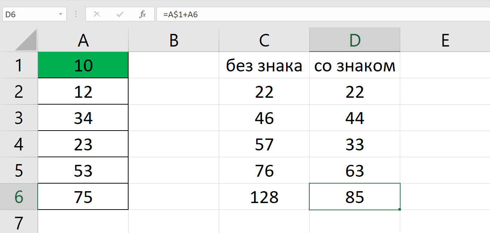
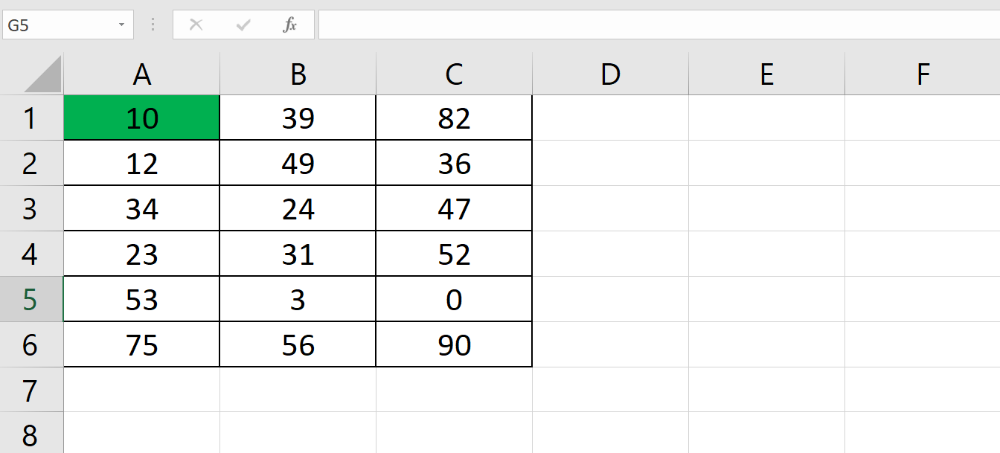
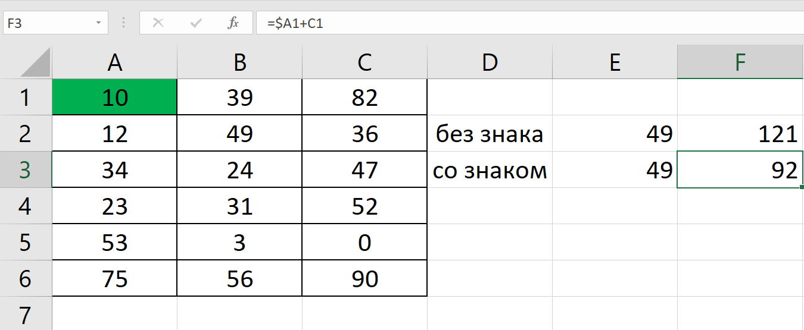
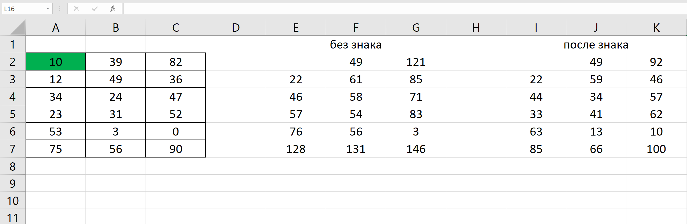

|
|
Знак $ в формулах Excel
Пример 1: нам нужно найти сумму числа 10 с числами одного столбца. Для этого нужно поставить знак $ после буквы  Видно, что во втором случае ячейка А1 фиксируется. Пример 2: нам нужно найти сумму числа 10 с числами одной ячейки. Для этого нужно поставить $ перед буквой.  Видно, что во втором случае ячейка А1 фиксируется по строке. Пример 3: нам нужно найти сумму числа 10 со всеми числами таблицы.Для этого нужно $ поставить перед и после буквы  Видно, что во втором случае ячейка А1 фиксируется и по строке и по столбцу. Назад |